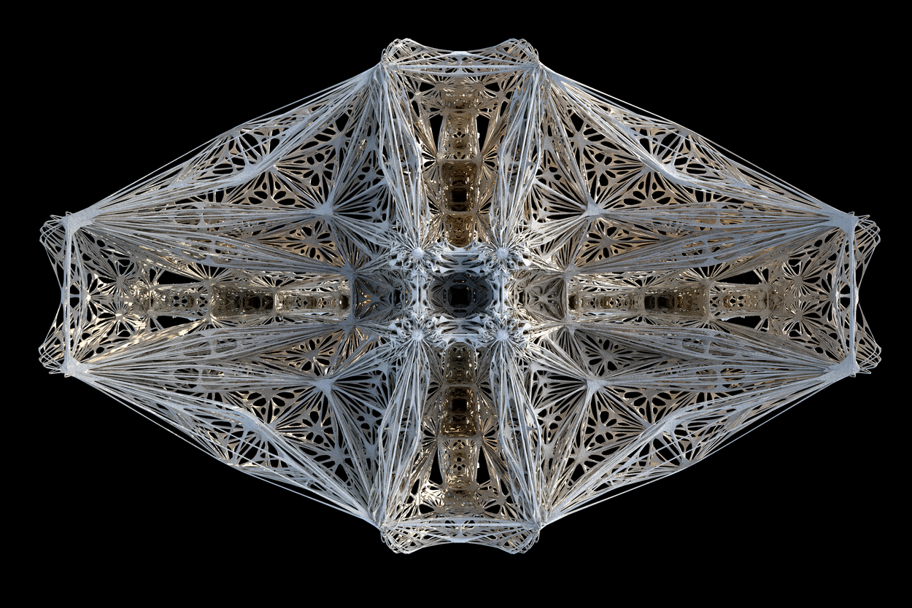

Gene Ting-Chun Kao
Architect / Software Engineer

Projects

Leopard

ICD/ITKE Pavilion 2015/16

Fish

Swarm Bridge


This project was my undergraduate architectural thesis design using Processing + Java code
Take a look if anyone is interesting, and welcome to download it.
Java environment is Java SE 6.
The Digital Lamp of Architecture - A New Church Prototype
Thesis Video
3D Printed Model (Also generated by this java code)


This is GUI software of Project of "The Digital Lamp of Architecture" Code written in 2013
Code credit to Jared Counts Curtain Coding Structure in BlueThen.com
The Digital Lamp of Architecture referred to John Ruskin's book
"The Seven Lamps of Architecture, " and make a comparison between its age
and our digital age. Through traveling, description in theory can be highly
discovered within backpacker's own eye. Finally, digital technology was implanted
into church architecture as an example to reflect on Ruskin's theory. One of the
most important element is "Sublime." Besides, scale, structure and ornamentation
was used to interpret and practice in Digital Architecture.